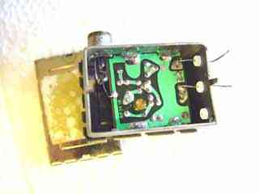
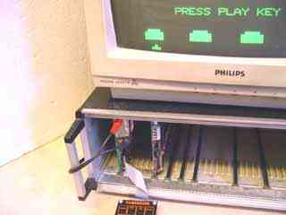
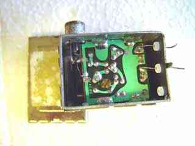
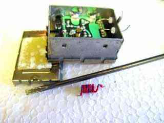
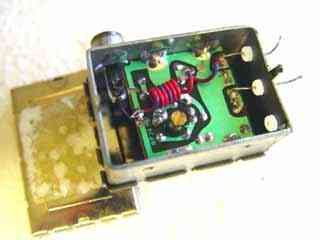

|
|
Modulator video out by Lee Davison |
|
 MethodEven though most 80's home computers have RF out I prefer to use the video out if there is one. For me using RF involves cable swapping whereas using video just means plugging into a spare video input.
The Microtan 65 is not unusual for an early home machine in only having RF out. At the time monitors were rare and expensive things but most people had access to a television, even if only a forty pound special 12 inch 'portable' from Woollies.
The idea here is to modify the modulator so as well as RF out the video signal is also available on the modulator's output socket. This is not as unlikely as it sounds as most receivers aren't bothered by the video signal and most monitors aren't bothered by the presence of the RF.
 ResultIn most cases you will need to remove the modulator from the PCB to do this modification but you can check before hand by lifting the lid, if you are looking at the track side of the modulator PCB the modification can be done in situ. If not, as in this case, the modulator will need to be removed first.
Locate where the RF out is taken off the board, in some cases this will be just a small pad with a series capacitor feeding it, in that case move on to the next step. Here the RF out appears to be shorted to the case but at the RF frequency it has some impedance, these tracks will need to be cut to allow the video to pass.
Take about four inches, ten centimeters, of single strand insulated wire and strip and tin the ends. Now wrap it into as many turns as will go on a small, 0.1 inch, former, a small screwdriver or drill bit is ideal for this.
   Cut the tracks from the RF out to ground.
Make a small coil from about four inches of insulated wire.
Solder the coil between the RF output and the video input.
Now solder one end of the coil to the RF out on the board and the other end of the coil to the video in on the board. The modulator can now be reassembled and soldered back onto the PCB.
With everything reassembled the RF out can be tested by connecting it to your TV or video RF input. IF you were using this before you may find that the frequency has changed after doing the modification. If this is a problem most modulators have a frequency adjustment that can be used to correct this.
Testing the video out is simply a matter of connecting the modulator output to the video in on your VCR, TV or video monitor, a clear, stable, picture should be visible.
This modification should work for just as well for composite colour video signals such as that found on the Oric, Commodore 64 and BBC micro and removes the need for special video leads for each machine.
| Last page update: 11th September, 2005. | e-mail me
 |